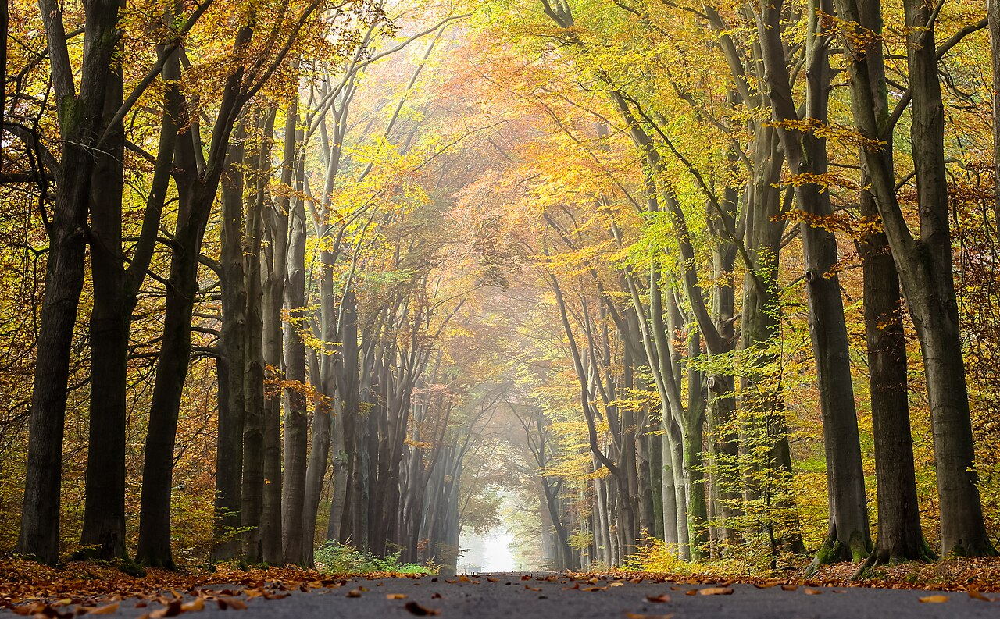

Guided gravel rides in the Black Forest
Two to five days on forest roads, 60 to 90 km a day, with a van for your bags and a guesthouse every night. April to October, from €690.

Four tours this season. Eight riders at most, one guide and one driver.
- Southern loop3 days, 210 km, Freiburg to Freiburg€690
- Feldberg and the lakes4 days, 290 km, Titisee to Basel€990
- Westweg5 days, 380 km, Pforzheim to Basel€1,390
- Autumn weekend2 days, 140 km, October only€450